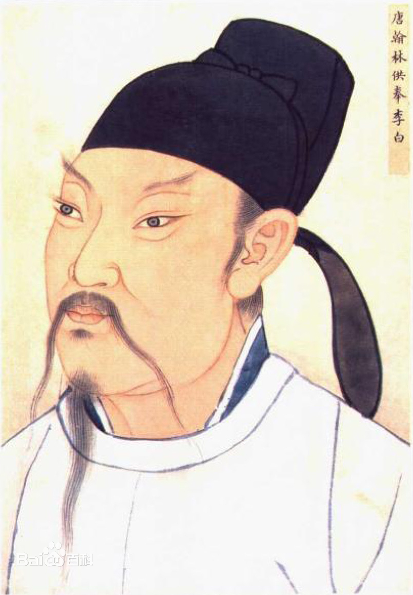

李白
人物简介
李白,字太白，号青莲居士，又号“谪仙人”，唐代伟大的浪漫主义
诗人，被后人誉为“诗仙”，与杜甫并称为“李杜”，为了与另两位诗人李商隐与杜牧即“小李杜”区别，杜甫与李白又合称
“大李杜”。《旧唐书》记载李白为山东人 ;《新唐书》记载，李白为兴圣皇帝李暠九世孙，与李唐诸王同宗。其人爽朗大方，爱饮酒作诗，喜交友
家庭关系
父亲:
李客，为任城尉.
妻子
原配：许氏，结发妻子，唐高宗时宰相许圉师的孙女，与李白生一子一女。
继室：宗氏，第二任妻子，唐高宗时宰相宗楚客的孙女。安史之乱爆发后，李白携宗氏南下。后李白因李璘案下狱时，宗氏曾奔走营救。
刘氏，与李白同居，后分手。
某氏，东鲁一妇人，与李白同居，生李颇黎。
子女
李伯禽，小名“明月奴”，原配许氏所生。一生未入仕途，贞元八年（792）去世。有一子两女，长子年轻时出游，不知所踪。两女分别嫁给当涂农户陈云和刘劝
李颇黎，李白在东鲁时和一女子所生。
李平阳，原配许氏所生，出嫁后不久即去世。
同宗
李云，族叔，唐玄宗时曾任秘书省校书郎。
李阳冰，族叔，为李白作《草堂集序》
代表作品
《将进酒》《蜀道难》《梦游天姥吟留别》《静夜思》《望庐山瀑布》《侠客行》《春思》《子夜秋歌》等。